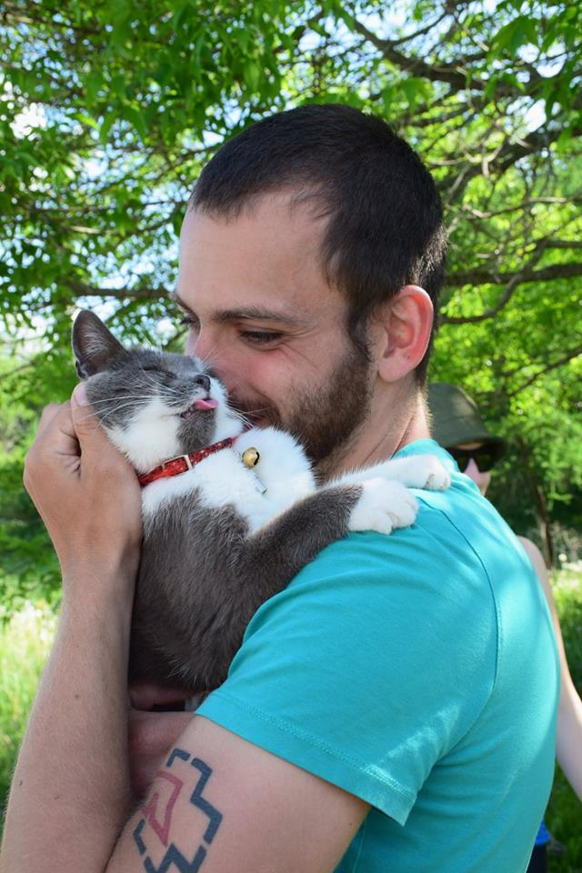

À propos de Pattitude
Pattitude cherche à répondre de manière flexible, efficace et responsable aux besoins des propriétaires de chiens et d’animaux de compagnie de la région de Montréal. Bon temps mauvais temps, matin et soir, il nous fera plaisir de s’occuper de vos animaux lorsque vous ne pouvez le faire vous-même. Nous fournissons également un suivi pour chacune de nos visites afin de vous laisser l’esprit en paix!
Nous voyons l’usage de méthodes au renforcement positif comme la nouvelle norme et évitons méthodiquement l’usage de tout aversif. Au-delà des considérations éthiques, nous traitons la punition comme une option inefficace qui ne suggère pas au chien quel comportement adopter et peut entraîner quantité d’effets secondaires néfastes. Nous préférons récompenser chaque petit geste posé dans la bonne direction afin de mener le chien à découvrir lui-même le bon comportement à suivre.
Vous avez sans doute déjà entendu parler du règlement 16-060 de la ville de Montréal introduit par l'administration Denis Coderre. Il s’inscrit dans une récente vague de législations visant spécifiquement à réduire la qualité de vie de certaines races réputées dangeureuses, quoique les mesures spécifiques à la race aient heureusement été suspendues par l'administration Valérie Plante. Depuis son adoption, la compréhension du comportement canin est devenue un sujet de conversation qui élève les passions. Nous souhaitons en profiter pour contribuer à l’extinction des mythes, le partage des découvertes et la popularisation des discussions du milieu comportemental canin moderne afin de rendre de telles lois impopulaires et inadmissibles.
À noter que nous utilisons un minimum de paperasse et effectuons tous nos déplacements en transport en commun ou en transport vert.
Ysaac

Dès l’adolescence, Ysaac s’occuppait déja des chiens de sa famille lorsque leurs propriétaires partaient en vacances. Ayant poursuivi des études supérieures dans le domaine de l’informatique, il a suivi sa passion d’enfance en 2016 en suivant la formation CoeurCanin (que nous recommandons d'ailleurs chaudement pour quiconque ayant de l'intérêt à travailler dans le milieu du comportement canin) et en travaillant dans une pension animale pendant la période estivale. Il compte mettre à profit ces deux champs de compétences en offrant ses services sur une plateforme web faite sur mesure, ajustée aux besoins de la clientèle.
